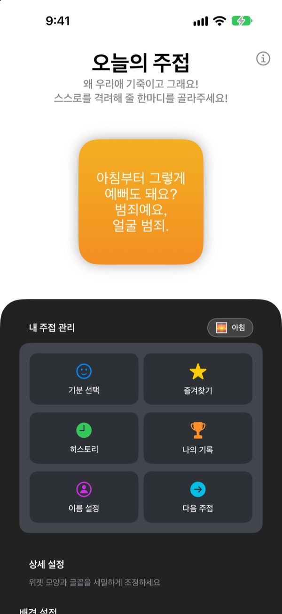
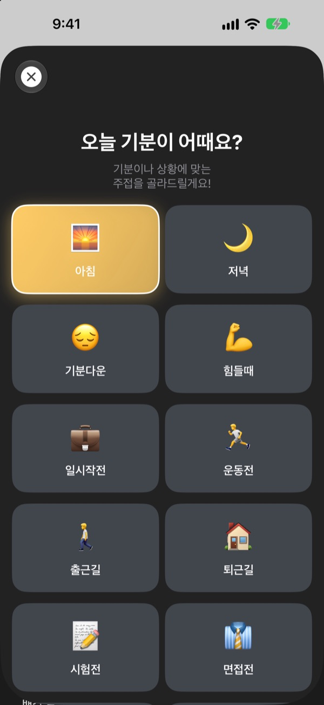
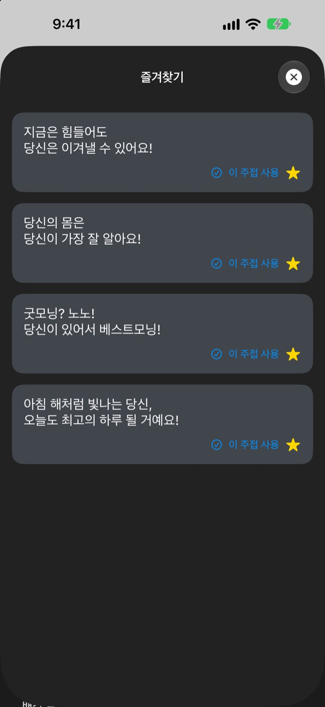
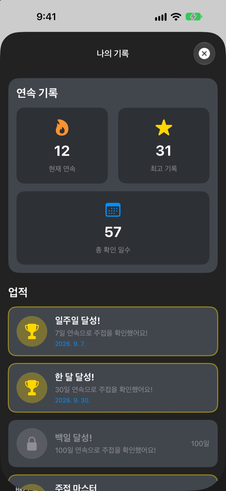

폰을 켤 때마다
열렬한 팬이 기다려요
홈 화면 위젯이 과하게, 아주 과하게 칭찬해 줘요. 아침엔 아침 주접, 면접 전엔 면접 주접. 글꼴과 색, 배경까지 내 취향대로 꾸며요.
한 번 구매로 모든 기능을 써요. 구독도 광고도 없어요.

주접 한마디 받아 보세요
기분을 고르면 위젯에 그 기분의 주접이 떠요. 다음 주접을 누르면 281개 중 하나가 무작위로 나와요.
나한테 제일 박한 사람, 혹시 나 아닌가요?
출근길에도, 면접 전에도, 퇴근길에도 머릿속에선 잔소리만 들려요. 오늘의 주접은 하루에도 몇 번씩 홈 화면에서 과하다 싶을 만큼 편을 들어 줘요. 피식 웃는 순간, 자존감이 조금 돌아와요.
지금 기분에 맞는 주접을 골라 받아요
아침, 출근길, 힘들때, 면접전, 데이트전처럼 14가지 기분과 상황 중에서 고르면 거기 맞는 주접이 바로 위젯에 떠요. 고르기 어려우면 랜덤도 있어요.

마음에 든 주접은 모아 두고 다시 써요
별을 눌러 즐겨찾기에 담고, 지나간 주접은 히스토리에서 다시 봐요. 이 주접 사용을 누르면 그 주접이 바로 위젯에 올라가요.

매일 받다 보면 기록이 쌓여요
주접을 확인한 날이 이어지면 연속 기록이 쌓여요. 7일, 30일, 100일 연속, 총 50일과 100일을 채울 때마다 업적이 열려요.

시작은 세 단계면 돼요
- 1
앱에서 기분을 골라요
기분 선택에서 지금 상황에 맞는 걸 눌러요. - 2
위젯을 꾸며요
상세 설정에서 글꼴, 글자 색, 배경, 새로고침 주기를 골라요.
- 3
홈 화면에 위젯을 놓아요
홈 화면을 길게 누르고 + 를 눌러 오늘의 주접을 찾아 추가해요.
위젯은 이렇게 꾸밀 수 있어요
- 글꼴
- Futura, Georgia, Marker Felt 등 13가지
- 글자 색
- 원하는 색 아무거나
- 배경
- 두 가지 색 그라데이션, 또는 앱에 든 배경 사진
- 정렬
- 왼쪽, 가운데, 오른쪽
- 행간
- 줄 사이를 넓히거나 좁히기
- 새로고침 주기
- 5분, 15분, 30분마다 새 주접
위젯 크기는 홈 화면에 추가할 때 골라요.
한 번 사면 끝이에요
앱 구매
- 주접 281개와 기분 14가지
- 홈 화면 위젯 꾸미기
- 즐겨찾기와 히스토리
- 연속 기록과 업적
개발자 응원하기
- 작은 팁, 보통 팁, 큰 팁 중에서 골라요
- 기능을 여는 결제가 아니에요. 고마운 마음을 전하는 곳이에요
원할 때만 보내는 응원이에요.
구독도 추가 결제도 광고도 없어요.
자주 묻는 질문
위젯은 어떻게 추가하나요?
홈 화면 빈 곳을 길게 눌러 편집 모드로 들어간 뒤, 위쪽의 + 를 누르고 오늘의 주접을 찾아 원하는 크기를 골라 추가하세요.
다음 주접은 어떻게 정해지나요?
기분을 고르면 그 기분의 주접이 바로 위젯에 떠요. 그다음부터는 고른 새로고침 주기마다 주접 281개 중 하나가 무작위로 나와요. 앱에서 다음 주접을 눌러 직접 넘길 수도 있어요.
위젯의 글꼴이나 새로고침 주기를 바꿀 수 있나요?
네. 앱의 상세 설정에서 글꼴, 글자 색, 배경, 정렬, 행간, 새로고침 주기를 바꿀 수 있어요. 새로고침 주기는 5분, 15분, 30분 중에서 골라요.
위젯 주접이 바로 안 바뀌어요.
위젯이 언제 새로 그려질지는 iOS가 정해서, 고른 주기보다 조금 늦게 바뀔 때가 있어요. 앱을 열었다가 닫으면 바로 반영돼요.
연속 기록은 어떻게 쌓이나요?
주접을 확인한 날이 하루씩 이어지면 연속 기록이 늘어요. 나의 기록에서 현재 연속, 최고 기록, 총 확인 일수와 업적을 볼 수 있어요.
저장한 즐겨찾기와 기록이 사라졌어요.
모든 정보는 기기 안에만 저장돼서 앱을 지우거나 기기를 바꾸면 옮겨지지 않아요. 앱을 지우지 않았는데 사라졌다면 이메일로 알려 주세요.
제 정보가 어딘가로 보내지나요?
아니요. 개인정보를 모으지 않아요. 이름, 즐겨찾기, 기록은 모두 내 기기 안에만 있어요.
버그를 알리거나 기능을 제안하고 싶어요.
앱의 개발자에게 문의에서 바로 보낼 수 있어요. 이메일이나 인스타그램 DM @lee25_ios로 보내 주셔도 돼요. 확인하는 대로 답해 드릴게요.
궁금한 점이나 의견은 leeo@kakao.com로 보내 주세요.